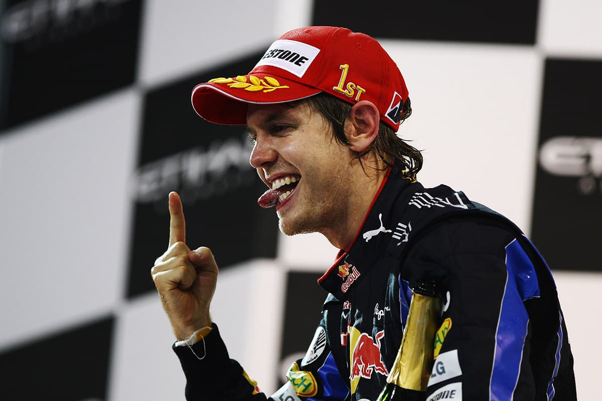

.png)
Sebastian Vettel – Il Dominatore della Red Bull
Sebastian Vettel è uno dei piloti più vincenti della storia della Formula 1. Con 4 titoli mondiali consecutivi vinti tra il 2010 e il 2013 con la Red Bull Racing, ha lasciato un segno indelebile nello sport. Preciso, veloce e intelligente in gara, è stato spesso paragonato ai grandi campioni del passato.
2010 – Il più giovane Campione del Mondo
Nel 2010, Vettel conquistò il titolo all’ultima gara ad Abu Dhabi, diventando il più giovane campione del mondo nella storia della F1 a soli 23 anni. Una stagione ricca di colpi di scena e un finale leggendario.
2011 – Dominio Totale
Il 2011 fu l'anno del dominio: Vettel vinse 11 gare e conquistò 15 pole position. Il suo secondo titolo arrivò con ampio margine, dimostrando la sua supremazia tecnica e mentale.
2012 – Lotta fino all’Ultimo
In una delle stagioni più combattute, Vettel conquistò il terzo titolo battendo Alonso all’ultima gara in Brasile, dopo una rimonta epica da fondo griglia. Un capolavoro tattico e di gestione della pressione.
2013 – Quarto Titolo e Record
Nel 2013, Vettel vinse 9 gare consecutive (record assoluto), chiudendo la stagione con 13 successi. Il quarto titolo arrivò con uno dei più forti domini visti in F1.
Dopo Red Bull: Ferrari e Aston Martin
Dopo la Red Bull, Vettel ha corso per la Ferrari dal 2015 al 2020, sfiorando il titolo nel 2017 e 2018. Dal 2021 al 2022 ha guidato per l’Aston Martin, portando esperienza e leadership al team. Si è ritirato a fine 2022, salutato con rispetto e affetto da tutto il mondo F1.
I Caschi di Vettel
Casco stagione 2010 – Red Bull
Casco 2022 – Messaggio ambientalista
Casco Ferrari – Iconico disegno bianco-rosso